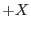
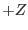
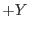
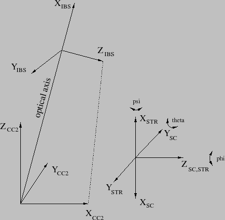

XMM-Newton Science Analysis System
epicbscalgen (ccftools-1.35.1) [xmmsas_20170112_1337-16.0.0]
Description
The XMM Current Calibration File contains the constituent CCF::Boresight
[1] which holds for each instrument a tuple of
three angles
 describing the misalignment
of the respective instrument boresight with respect to the
satellite coordinate frame (SACCOORD - see documentation of package
cal. The angles are to be interpreted
as 3-2-1 Euler rotation angles[2] through which the
SACCOORD frame is transformed into the instrument boresight (IBS) frame
as depicted in Fig. 1 for the case of EMOS2.
Formally, the IBS is defined as follows:
describing the misalignment
of the respective instrument boresight with respect to the
satellite coordinate frame (SACCOORD - see documentation of package
cal. The angles are to be interpreted
as 3-2-1 Euler rotation angles[2] through which the
SACCOORD frame is transformed into the instrument boresight (IBS) frame
as depicted in Fig. 1 for the case of EMOS2.
Formally, the IBS is defined as follows:
- The  axis points along the optical axis of the telescope
of the respective instrument from the focal plane into the
sky.
- The  axis is orthogonal to the axis and lies in the plane
spanned by the axis and the axis of the CAMCOORD2
(see documentation of package cal
frame.
- The  axis completes the right-handed, orthonormal Cartesian
coordinate frame.

The computation of the angles is a purely geometrical problem and,
thus, should have a straightforward analytical solution. However, due to
the large number of involved independent variables (Ra/Dec of pointing,
position angle, position of cameras in satellite frame, uncertainties in
focal lengths, position and extent of sources being looked at, etc.) and
the fact that math with Euler angles is non-trivial epicbscalgen
employs an empirical scheme which is outlined below. The scheme
has the following advantages:
- The process is fully automatic in the sense that is does require
only minimal input from the person running the task.
- It is bound to always give the right answer (chances of making
mistakes are small).
- The correctness of the algorithm can be tested with SciSim.
Subsections
XMM-Newton SOC/SSC -- 2017-01-12